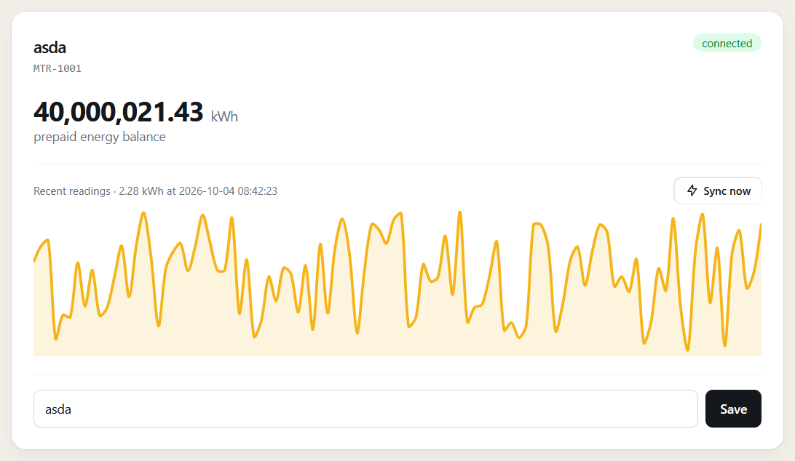
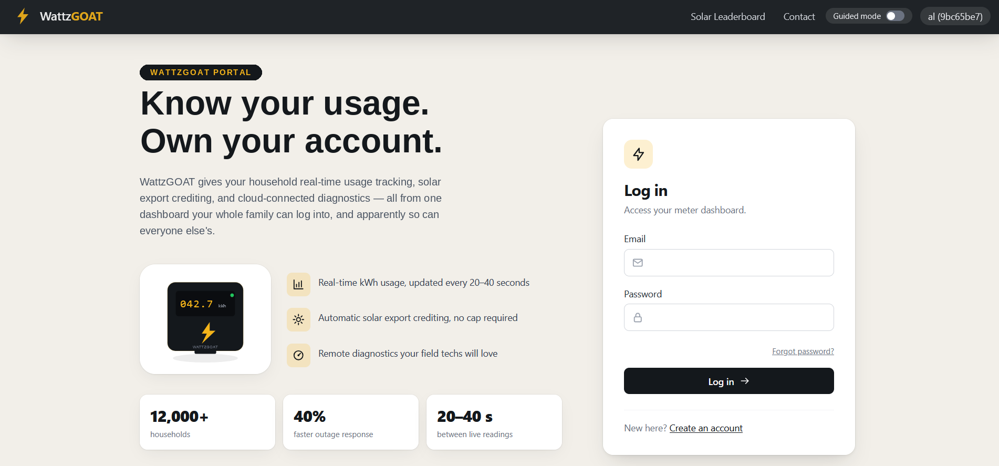
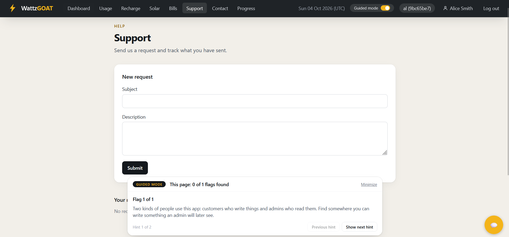
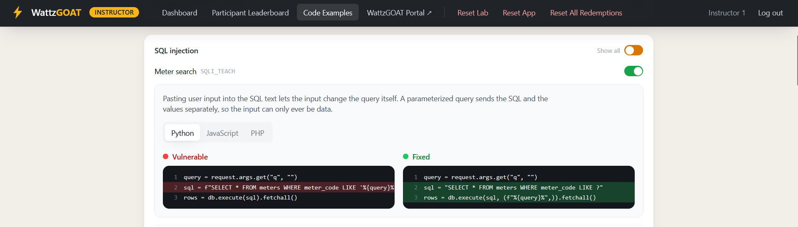
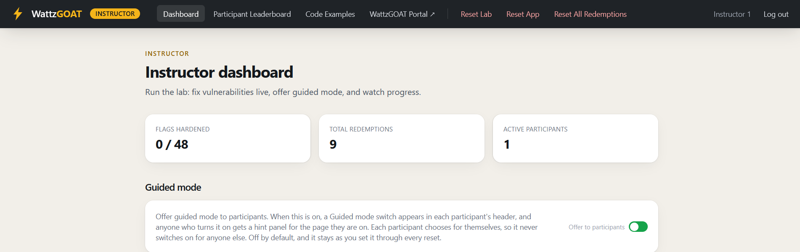

Open-source security training
A target that teaches you back.
WattzGOAT is a free, open-source, deliberately vulnerable electricity utility portal — 48 flags across 17 categories, each with guided hints and a side-by-side vulnerable-vs-fixed code view. Self-hosted, and built for the classroom, not production.

48
Flags to find
17
Vulnerability categories
Open-Source
Runs on Docker
A real-looking target
Styled like a real product, because that's the point
Every page is built and restyled like an actual customer portal, not a bare lab with no design. The realism is part of the exercise — finding a vulnerability on something that looks finished is a lot closer to the real job than finding one on something that obviously isn't.

Guided mode
A hint bar that meets you on the page you're stuck on
Flip guided mode on and a bar docks to the bottom of whatever page someone's working through. It never gives the answer away — two hints per flag, a nudge first and a technique second — and it tracks how many flags are left on that page without naming which vulnerability they belong to. Each person switches it on for themselves, so a session can run with some people hinted and others working cold.

Code view
See exactly what the fix looks like, not just that one exists
Redeem a flag and its code unlocks on the Progress page — the vulnerable branch and the fixed branch, side by side, with the changed lines called out and a plain-language note on why the fix works. Every one of the 48 flags has an example in Python, JavaScript, and PHP, so the lesson isn't tied to one language or framework.

Instructor mode
Run the room without touching a terminal
A separate dashboard lets whoever's running the session harden or re-break any flag live, watch a leaderboard update in real time, and reset the lab between groups — all from the browser, all while everyone stays on one shared instance. Export a CSV when you need a record afterward.

Built for
Runs anywhere people are learning this hands-on
One container, no shared infrastructure to coordinate — it fits however you're already running the session.
CTFs
48 ready-made flags across 17 categories, each independently toggleable, so you control exactly how hard the board is.
Trainings & workshops
Guided mode and the code view do the explaining when you can't be at every screen at once.
Corporate security teams
Self-hosted and offline-friendly — nothing about the app or its data has to leave your network.
Classrooms & courses
Instructor mode gives one dashboard to a TA or professor for an entire section.
Quick start
Running in one command
If you've got Docker installed, this gets a standalone instance up with its own participant console and leaderboard. No database setup, no separate services.
Full setup instructions on GitHub →# pulls the image and starts a standalone instance docker run -d --name wattzgoat \ -p 5000:5000 -p 5001:5001 \ -e INSTANCE_HOST=127.0.0.1 \ -e STANDALONE=true \ -e STANDALONE_PASSWORD=YourPasswordHere \ ghcr.io/wattzgoat/wattzgoat-web:latest # then open https://127.0.0.1:5000